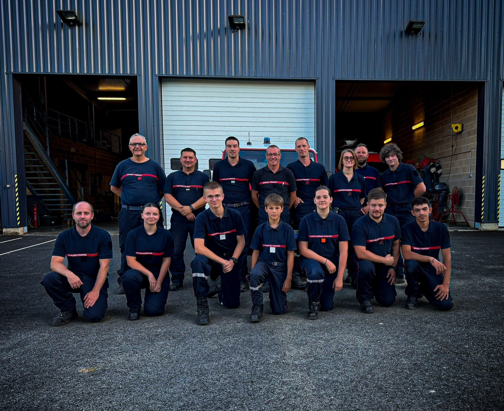

Se former
Répéter les gestes, travailler les scénarios et progresser ensemble. La formation permet de construire des réflexes communs.
Notre caserne
Un centre de secours, c’est d’abord un collectif. Découvrez le Centre de secours de Le Chesne et son équipe de sapeurs-pompiers volontaires.
Le centre
La caserne est un point de repère. Un lieu où l’on apprend, où l’on s’entraîne et où l’on se prépare à partir ensemble.
Le Centre de secours de Le Chesne réunit 23 sapeurs-pompiers, tous volontaires (effectif 2026). Il est dirigé par le lieutenant Thomas BOUTICHE. La caserne se situe au 18 rue du Zouave Coco, 08390 Le Chesne.

L’équipe du Centre de secours de Le Chesne.
Notre quotidien
Répéter les gestes, travailler les scénarios et progresser ensemble. La formation permet de construire des réflexes communs.
Vérifier les véhicules, contrôler les équipements et maintenir les espaces du centre : une préparation qui se joue aussi dans les détails.
Partager les expériences, accueillir de nouveaux membres et faire vivre le centre au fil des échanges et des projets.
Notre histoire
La caserne actuelle a été inaugurée en 2016, selon les informations transmises par le centre.
Inauguration de la caserne du Chesne.
Notre secteur
Environ 3 100 habitants couverts.
Le Chesne, Les Alleux, Louvergny, Quatre-Champs, Belleville-et-Châtillon-sur-Bar, Sauville, Brieulles-sur-Bar, Chagny, Neuville-Day, Tannay, La Sabotterie, Lametz, Marquigny, Montgon, Les Petites-Armoises, Sy, Les Grandes-Armoises, La Berlière, Verrières, Noirval, Le Mont-Dieu.
Secteur transmis par le centre · Données de territoire : Argonne Ardennaise.
Zone défendue par le CIS Le Chesne
Les limites communales délimitent la zone colorée. Sélectionnez une zone pour afficher son nom.